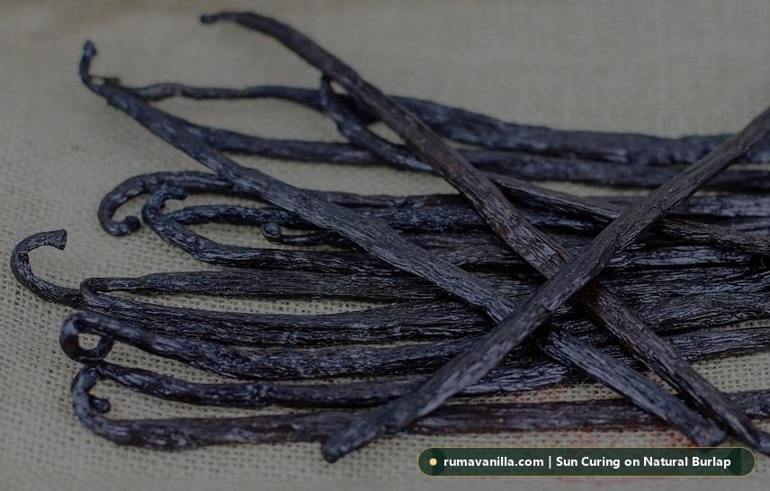
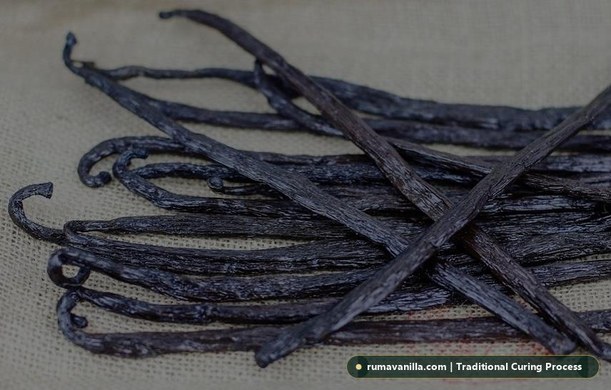

World-class vanilla cannot flourish at the expense of biodiversity or farming communities. We operate an ethical, shade-grown agroforestry supply model that enriches West Java soils and rewards smallholders with enduring economic security.
Guiding our daily operations from farm plots to oceanic container shipping.
Fair trade compensation 20-30% above local market rates, pre-harvest zero-interest financing, and strict zero-child-labor policies.
100% shade-grown agroforestry under native canopy trees, organic composting, and natural botanical pest control without synthetic pesticides.
Artisanal sun-curing on cotton blankets and wooden sweating boxes. Zero artificial curing ovens, zero chemical additives, zero radiation.
Complete harvest batch traceability from farm cooperative cluster to sealed vacuum carton with analytical laboratory CoA validation.
In conventional spice trading, smallholder farmers often receive less than 15% of the export value, forced to sell unripe beans early to predatory middlemen to survive between harvests.
PT. Bumi Ruma Nusantara disrupts this destructive cycle. We work directly with farmer cooperatives, bypassing broker layers. We pay a living-income premium and guarantee purchase contracts before flowering, allowing farmers to let beans reach full maturity on the vine.
Partnering across Sukabumi and surrounding agroforestry highlands.
110 farming families situated at 550m elevation. Specialize in dense Planifolia with deep balsamic and smoky notes from rich volcanic andisols.
Primary Collection Hub85 farming families practicing traditional shade-canopy intercropping under Gliricidia and Albizia trees. Yields pods with 2.0%+ vanillin.
High Vanillin Elite55 farming families with coastal mountain microclimates. Excellent sun-sweating conditions yielding plump Grade A pods exceeding 18cm.
Grade A Gourmet PrimeUnlike monoculture crops that require clear-cutting of rainforests, vanilla orchids (*Vanilla Planifolia*) are climbing epiphyte vines that require living support trees to thrive.
Our partner farmers plant vanilla vines along living tutor trees like Gliricidia sepium (Gamal) and native fruit trees. This preserves canopy cover, provides natural leaf mulch, and creates thriving micro-habitats for birds and pollinators.
Pure agricultural integrity protecting both human health and delicate soil biology.
Farms utilize decomposing fallen leaves, coconut coir, and aged animal compost to provide balanced organic nutrition and maintain root moisture.
Pests are managed with organic neem oil sprays, garlic decoctions, and beneficial predatory insect habitats instead of synthetic organophosphates.
Farms are hydrated using clean gravity-fed mountain spring water and natural monsoon rains, free from industrial chemical run-off or heavy metals.
In some commercial origins, industrial dehydrators and fossil fuel-powered ovens are used to rapidly bake vanilla beans in days. This destroys delicate aroma fractions and consumes massive amounts of electrical power.
At PT. Bumi Ruma Nusantara, curing relies 100% on the natural warmth of the Indonesian sun and passive shade airflow. Our beans dry slowly over 3 months, achieving superior aromatic depth with near-zero industrial carbon emissions.

Because vanilla orchid flowers open for only a few hours in the early morning, delicate manual pollination requires steady hands, precision, and immense patience.
Women play the central role in our vanilla ecosystem. Beyond hand-pollination, women lead bean grading, sorting, and daily sun-sweating monitoring at our Sukabumi facilities.
By providing formal contracts, leadership roles, and financial literacy workshops, we help female farmers build sovereign savings, fund children's higher education, and lead cooperative committees.
Guaranteed compliance for European importers under the EU Deforestation Regulation.
Every smallholder plot is polygon-mapped with geo-coordinates, verifying that crops originate from established farmland without post-2020 deforestation.
Complete documentation dossiers ready for entry into the EU TRACES system, eliminating border seizure or compliance delays at European ports.
Carton lot numbers trace back directly through curing logs, collection hub receipts, and the specific cooperative harvest date.
Demonstrating measurable environmental and social outcomes for enterprise ESG reports.
Providing living income price premiums that lift rural farming households above regional poverty thresholds.
Safe working conditions, zero child labor, and formal agricultural contracts across our Indonesian supply chain.
Sun-powered curing, zero synthetic chemicals, and rigorous post-harvest loss minimization.
Agroforestry canopies preserving native vegetation, soil microbiology, and rainforest borders in West Java.
While vacuum sealing is mandatory to protect vanilla quality, we are actively reducing single-use plastic waste across all export handling stages.
Outer export cartons are constructed exclusively from certified sustainably managed forestry paper.
Transitioning to recyclable mono-PE barrier vacuum pouches to facilitate circular recycling streams in destination countries.
For every metric ton of vanilla exported, PT. Bumi Ruma Nusantara finances the planting of 100 native hardwood and fruit shade trees in degraded buffer zones surrounding Mount Gede Pangrango National Park.
Common questions from enterprise buyers and corporate ESG auditing teams.
Source directly from farming cooperatives that care for their land and people. Request our sustainability dossier or schedule an on-site cooperative tour today.